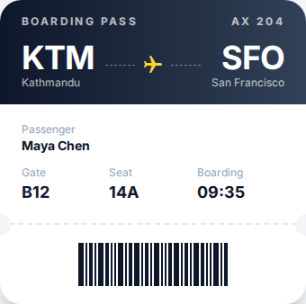
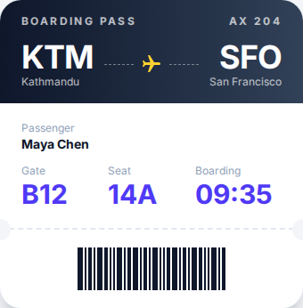
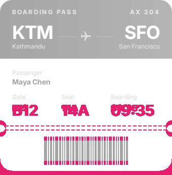

1. Install in one command
In the project root:
npx @ayushniroula/arguseye install claudeThis adds an arguseye server to the project's .mcp.json (other servers in the file are kept) and copies the skill that tells Claude when to use it to ~/.claude/skills/arguseye/SKILL.md. Add --dry-run to see the files without writing them. Restart Claude Code so it loads the new server.
Requirements: Node.js 22 or newer, the project's dependencies installed, and Chromium or Google Chrome.
2. Ask Claude to look
The skill makes Claude reach for the tools on its own after UI edits, and you can also ask directly:
Render components/BoardingPass.tsx at 390 px wide and tell me if any text is clipped.
Make the gate number bigger, then compare against the render from before your change.
Render BoardingPass at every place it is used.
| Tool | What Claude gets back |
|---|---|
render_component | A PNG cropped to the component and its accessibility tree. Pass usage to use a real call site's props, props as JSON, or neither for samples from the TypeScript type. Also takes a viewport, a forced theme (light or dark), a stand-in parent frame, clicks and typing before capture, and seeded localStorage. |
render_diff | Compares the current source with an earlier captureId, reusing its props and viewport: before, after, a diff image, the changed-pixel share and whether the accessibility tree changed. |
list_usages | Every place the component is used, with the literal props each call site passes and the ones that depend on runtime values. |
render_usages | Renders the component at every call site with that site's props, in batches. |
describe_props | The props the component accepts, read from its TypeScript type, with the sample values render_component uses when none are given. |
3. What a check looks like
A real run on the demo app in this repository. The baseline is a boarding pass rendered with the props from its call site. The edit makes the gate, seat and boarding values bigger (text-lg to text-3xl). The diff reports 3.83% changed pixels and marks two areas: the bigger values, which were asked for, and the tear line and barcode, which moved down 8 px because the card grew from 338 to 346 px.



arguseye shot FILE --capture-dir DIR and arguseye diff --baseline DIR --out DIR.Codex, Cursor and other agents
Replace claude with the client name. The command merges into existing config files.
| Name | Agent | MCP config | Skill |
|---|---|---|---|
claude | Claude Code | .mcp.json in the project | ~/.claude/skills/arguseye |
codex | Codex | ~/.codex/config.toml | ~/.agents/skills/arguseye |
cursor | Cursor | ~/.cursor/mcp.json | .cursor/skills/arguseye |
gemini | Gemini CLI | .gemini/settings.json | .gemini/skills/arguseye |
copilot | GitHub Copilot | .vscode/mcp.json | .github/skills/arguseye |
vscode | VS Code agent mode | .vscode/mcp.json | none |
windsurf | Windsurf | ~/.codeium/windsurf/mcp_config.json | none |
antigravity | Antigravity | .agents/mcp_config.json | .agents/skills/arguseye |
print writes the MCP snippet to the terminal for any other client, and all sets up every client above at once.
Where it stops
These are isolated component renders with discovered inputs, not full application tests. Runtime-only props, arbitrary providers, backend and auth states, Next.js server execution and Nuxt application context may be incomplete, and the render says so with warnings. A pixel diff is evidence for review, not proof the change is right. The compatibility page has the details, and the comparison covers when Storybook or a browser MCP is the better tool.
Questions
How do I let Claude Code see my UI?
Run npx @ayushniroula/arguseye install claude in the project, then restart Claude Code. It adds an arguseye entry to the project's .mcp.json and a skill to ~/.claude/skills/arguseye. Claude can then call render_component to get a cropped screenshot and the accessibility tree of any React, Next.js or Vue component.
Does it need the dev server running?
No. Arguseye renders the component from its source with the project's installed packages, layouts and global CSS. Node.js 22 or newer, installed dependencies and Chromium or Google Chrome are required.
How does Claude check its own edit?
It renders the component first, which returns a captureId, makes the edit, then calls render_diff with that id. The result is the before and after images, a diff image with the changed pixels marked, the share of pixels that changed and whether the accessibility tree changed.
Which other agents work?
Any MCP client. The install command also writes config for codex, cursor, gemini, windsurf, vscode, copilot and antigravity; print shows the snippet for anything else.